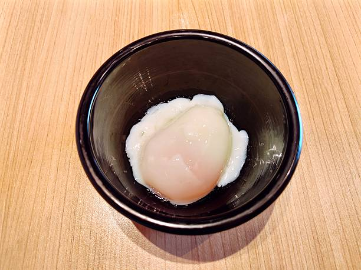

Home
Odin's Onsen Tamago

Description
A quick way to poach eggs japanese-style in the microwave. No hot spring water necessary!
Ingredients
- Water
- 1 large refrigerated egg
Steps
- Crack the egg into a micorwave-safe bowl.
- Add water around the edges and microwave for 3 minutes.
- Carefully scoop the egg with a spoon and drain the water.
- Garnish with black pepper or shichimi togarashi.